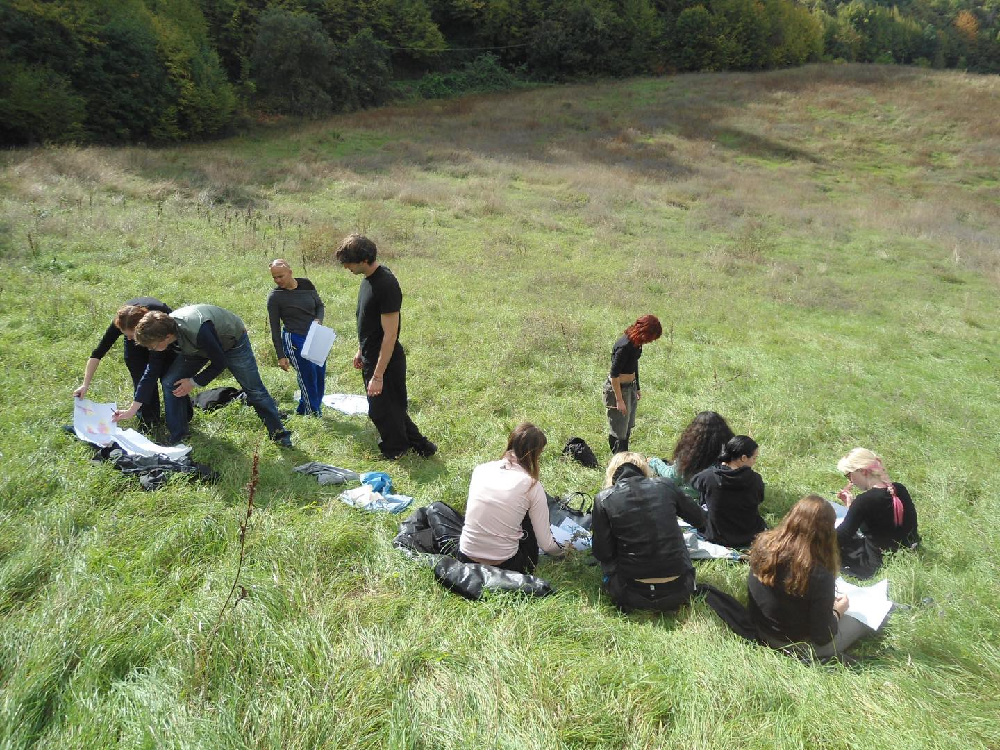

Amsterdam to Cà de Monti
Gerrit Rietveld Academie
Tallinn to Berlin/Lisbon
Estonian Academy of Arts
Basel to Museums
FHNW Academy of Arts and Design
Prague / Genéve to Mount Sněžka / River Saône
UMPRUM Prague, HEAD Geneva
Nowhere to Somewhere
Dutch Art Institute